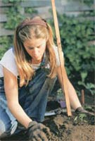

Imagine harvesting olives on the island of Crete; helping plan and build a thriving ecovillage in Georgia; or tending sheep on the heathered hills of Ireland. If you are eager to learn about sustainability in another part of the world or even your own neighborhood, and have an adventurous spirit, an inquisitive mind and a sturdy body, one of the following opportunities may be right for you.
Those begging for new adventures and eager to get their paws in the soil this spring will want to say "WWOOF!" - Willing Workers on Organic Farms, that is. From Central American fincas to old English homesteads, WWOOF aims to give volunteers firsthand experience in ecologically sound growing techniques, while exposing them to country life, either in the United States or overseas. Typically, WWOOFers work six hours each day, six days a week, planting, harvesting, weeding, building, baking, feeding and milking. In return for volunteers' helping hands, hosts provide bed and board, and share their knowledge and expertise. WWOOF International ( www.wwoof.org ) connects volunteers and hosts, and offers sage advice for every would-be WWOOFer.
For those less likely to stray from the States, Organic Volunteers ( www.organicvolunteers.com ) offers more than 800 opportunities for folks who want to get a handhold on sustainable projects. Organic Volunteers is the brainchild of eco-entrepreneur Ethan Schaffer, who was recognized for his contributions to the environment as a 2001 recipient of the David Brower Youth Awards. The well-organized Web site, which fancies itself a cultural exchange of sorts, allows volunteers to pick their passions, from herbal healing to eco-retailing, and get firsthand experience in the field. Organic Volunteers has more than 2,000 members across 41 states.
If you're an aspiring aggie, the Appropriate Technology Transfer for Rural Areas publishes a 115-page listing of Sustainable Farming Internships and Apprenticeships. For more than a decade, this one-of-a-kind resource has connected established growers and enthusiastic greenthumbs. The listing is free, and includes contact information and detailed descriptions of the farm, room and board arrangements, and required time commitment. The list is updated at the beginning of each year and is available on ATTRA's Web site (www.attra.org ; click on Resources) or by calling (800) 346-9140.
|
 GETTY IMAGES Volunteers unearth their organic passions, become aquainted with the work and reward of farming and gardening, and learn some new tricks of the trade. |
|
|